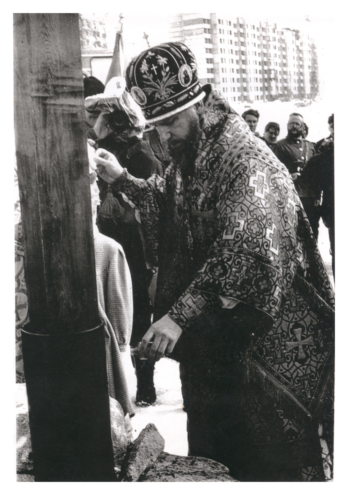
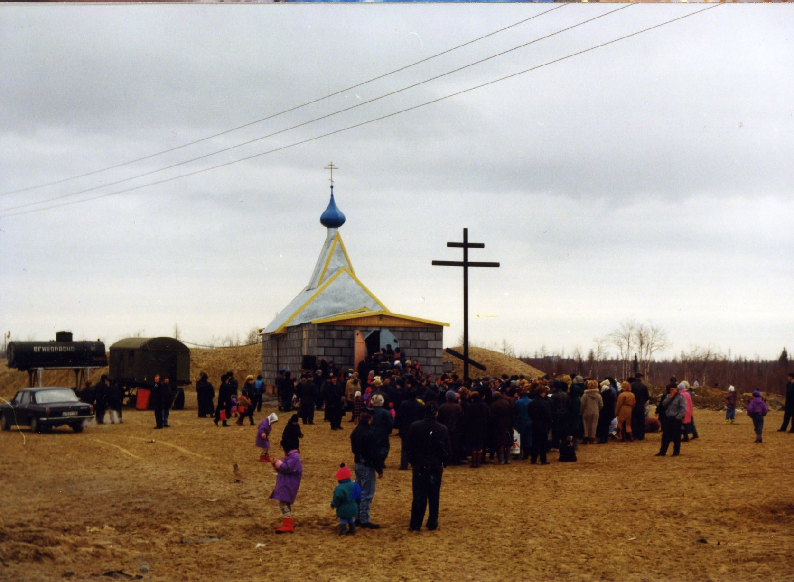
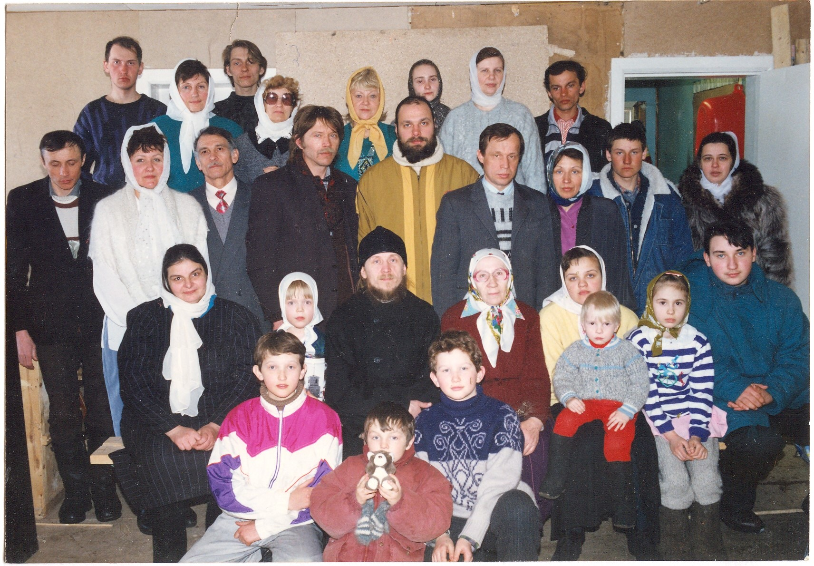

История создания первого православного прихода в городе Новый Уренгой началась осенью 1992 года, когда были организованы собрания православных верующих в спорткомплексе «Сибирские медведи». На этих встречах новоуренгойцы решили, что городу нужен храм. Вскоре представители казачьего войска и грузинской диаспоры обратились к епископу Тобольскому и Тюменскому Димитрию с просьбой благословить благое начинание и освятить место под строительство храма.
{kind=link}

30 апреля 1993 года владыка Димитрий, в сопровождении священства и хора Тобольской духовной семинарии, прибыл в Новый Уренгой с пастырским визитом. 2 мая он отслужил первую в городе Божественную литургию и освятил место для строительства храма на северном берегу реки Седе-Яха. В тот же день состоялось собрание православных горожан, где утвердили совет общины и избрали первого председателя приходского совета – И.П. Овчинникова.
На освящённом месте установили временную, переоборудованную из жилого вагончика, церковь. В этой церковке с принесёнными из дома иконами в 1994 году было отпраздновано Светлое Христово Воскресение, пока без участия священника. Всю пасхальную ночь верующие провели в молитве и чтении книг Священного Писания.
{kind=link}

В апреле 1995 года, уже получившая официальную регистрацию община, встречала своего первого настоятеля – иерея Михаила Денисова. Отец Михаил без устали занимался просвещением прихода. Осенью 1995 года, в построенном общими силами здании, открылась воскресная школа для детей и катехизаторские курсы для взрослых, чтобы изучать основы христианской веры.
Надёжной опорой настоятелю стал «костяк» прихода - люди, которые с самого начала занимались организационными вопросами во время строительства помещений, обеспечивали работу приходских служб. Это те, кто оставили свои должности в городских компаниях и пришли трудиться в приход. Работу с ненормированным графиком и мизерной зарплатой в этом случае правильно назвать служением. Вот имена тех, кто посвятил себя церкви: Михаил Силантьев, Анатолий Бардаков, Екатерина Годованюк, Виктор Москаленко, Елена Бойко, Татьяна Тулик, Александр Мерзляков, Евгений Ковалёв, Игорь Гирич, Марина Антипьева, Елена Колядюк.

То время запомнилось прихожанам, как дни необыкновенного духовного подъёма.
{kind=link}

В феврале 1997 года город облетела тревожная новость: в маленькой церкви из-за неисправной электропроводки случился пожар, полностью уничтоживший церковь. Беда православной общины никого не оставила равнодушным. Уже через несколько дней в городе провели благотворительный телемарафон в поддержку строительства православного храма. С раннего утра и до глубокой ночи в городской Дом культуры «Октябрь» приходили люди, чтобы внести свою лепту в благое дело. За два дня марафона удалось собрать 105 000 000 рублей и более 2 000 долларов. Эту огромную сумму пожертвовали горожане. Ещё 165 000 000 рублей перечислили организации. Возведение нового храма взяла на себя Администрация города Новый Уренгой во главе с мэром Натальей Владимировной Комаровой.
Строительство храма начали 2 марта 1997 года после молебна на освящение первой сваи. Деньги для церкви, расположенной на 65-й параллели вблизи Полярного Круга, были собраны практически за два дня. А возвели её всего за шесть недель. Но самое удивительное, пожалуй, не в сроках строительства. Многие люди пережили духовное рождение, участвуя в созидании храма.

Поистине, нет таких препятствий, которые не смогло бы преодолеть благотворное единение людей ради общеполезного дела. Здесь, в городе газодобытчиков, как и вообще на Крайнем Севере, необыкновенно сильны традиции взаимной поддержки: в одиночку на Севере не прожить. И эти лучшие качества сибирского характера, укрепленные чистосердечной верой, помогают ямальцам осваивать новые месторождения, прокладывать дороги в дальней тундре и строить златоглавые храмы.
Нельзя не вспомнить добрым словом тех, кто оказал поддержку строительству. Среди них генеральный директор ООО «Газпром добыча Уренгой» Рим Султанович Сулейманов, генеральный директор ООО «Ямбурггаздобыча» Александр Георгиевич Ананенков, генеральный директор предприятия «Тюменбургаз» Виктор Иванович Вяхирев, генеральный директор «Северподводтрубопроводстрой» Александр Александрович Платонов, руководители автотранспортных предприятий города Александр Сергеевич Рябов, Игорь Моисеевич Подовжний, Олег Афанасьевич Ситников и многие, многие другие.
В мае 1997 года в храме, уже увенчанном куполами, служили Пасху.

К светлому празднику Рождества подоспела большая звонница, выполненная мастерами города Каменск-Уральский. Предстояло выполнить ещё много отделочных работ и росписи – ею кропотливо занимались художники Ольга Денисова и Анатолий Беляев. К тому времени в приходе под руководством регента Анастасии Гладковой сформировался церковный хор. Пели непрофессионалы, но делали это очень душевно. Выпускница регентского класса Тобольских Духовных школ, Анастасия Сергеевна проводила регулярные спевки для желающих участвовать в хоре.

На очередном приходском собрании с помощью жеребьёвки выбрали нового председателя Церковного совета – Екатерину Годованюк. Эта хрупкая женщина, пришедшая на работу в приход «из начальников», несла на своих плечах большое количество забот о храме.
Конечно, приходская жизнь была сосредоточена не только на богослужениях и строительстве. В 1997 году при храме открыта православная гимназия. Её директором стал Михаил Силантьев. Харизматичный педагог, Михаил Афанасьевич умел взрастить веру в ребятах, проводил с ними внеурочные занятия, сопровождал гимназистов в паломнические поездки. Также он курировал приходскую редакцию: ему удалось наладить выпуск ежемесячной приходской газеты «Православный Север», а затем, совместно с ТРИА «Импульс» и филиалом ОГТРК «Ямал-регион», создавать тематическую программу «Вестник православия».
Заботами настоятеля в приходе были открыты ризница, просфорная, столярная мастерская, библиотека. Её фонд состоял примерно из 18 000 наименований православных книг, периодических изданий и видеоматериалов. Бессменным приходским библиотекарем стала Светлана Таран.
23 апреля 1998 года архиепископ Тобольский и Тюменский Димитрий освятил новый храм в честь великого русского святого преподобного Серафима Саровского. Служба отличалась необычной торжественностью. Когда в храме зазвучало великолепное, слаженное пение хора Тобольской духовной семинарии, казалось, вздрогнуло всё пространство от купола до паперти и присутствующие благоговейно замерли во всеобщей молитве: «Христос воскресе из мертвых, смертию смерть поправ…».
Осенью 1998 года настоятеля храма, иерея Михаила Денисова, перевели в один из южных приходов Тюменской области. Настоятелем в новоуренгойский православный приход, по благословению правящего архиерея, был назначен иерей Валерий Кочнев. В то время прихожан храма становилось больше день ото дня. Нередко случалось так, что отец Валерий, служивший по три Божественные литургии в неделю, принимал исповедь до глубокой ночи. Приход остро нуждался в священниках. По благословению архиерея в Новом Уренгое стали служить иерей Евгений Прохоров, иерей Алексий Туров, иерей Андрей Кряклин (в настоящее время настоятель Благовещенского храма в районе Коротчаево), иерей Александр Колесников (в настоящее время настоятель храма святого апостола и евангелиста Иоанна Богослова в посёлке Ямбург).
В 1998 году при храме начал работу отдел межрегионального молодёжного движения «Сибирь молодая православная». Юные верующие участвовали в приходских мероприятиях, встречах с просмотром хороших фильмов, видеоматериалов о вере с последующим обсуждением. В настоящее время молодёжное движение действует под названием "Благо".
1 ноября 2006 года архиепископ Тобольский и Тюменский Димитрий назначил на служение в Новый Уренгой нового настоятеля — иерея Олега Нелина.
С ноября 2009 года приход активно сотрудничает с городской многопрофильной больницей. Здесь оборудована молельная комната, в которой совершается исповедь и причастие больных на еженедельной Божественной литургии, проводятся молебны и чтение акафиста иконе Пресвятой Богородицы «Всецарица».
С июня 2011 года новоуренгойский православный приход храма прп. Серафима Саровского вошёл в состав Новоуренгойского благочиния Салехардской епархии под управлением епископа Салехардского и Ново-Уренгойского Николая. Общая организация, координация и контроль миссионерской работы в Новоуренгойском благочинии велись под руководством благочинного, настоятеля храма прп. Серафима Саровского протоиерея Олега Нелина.
7 сентября 2014 года в газовой столице России состоялось освящение и торжественное открытие нового здания Православной гимназии на территории Богоявленского собора. В бывшем помещении гимназии на территории храма прп. Серафима Саровского теперь разместилась воскресная школа.
С 2016 года при храме учреждено Архиерейское подворье. В 2018 году, по указу правящего архиерея, настоятелем храма и благочинным Новоуренгойского благочиния назначен иерей Илья Боровских. В настоящее время отец Илья возглавляет штат клириков храма в составе иерея Сергия Мусиенко и иерея Ирадиона Дзулиашвили.

Благочинный, священнослужители храма и благочиния регулярно отправляются в миссионерские поездки. Маршруты поездок проходят через отдалённые населённые пункты: посёлки Тазовский, Мыс Каменный, Новый Порт, сёла Антипаюта, Газ-Сале, Гыда. Священники совершают Божественную литургию, таинство исповеди, таинство крещения и даже освящают ледоколы.
Деятельность православного прихода — это, прежде всего, общая молитва и социальное служение. Каждый прихожанин, в зависимости от профессии, наклонностей, опыта, духовного призвания вносит в общее дело свой посильный вклад.